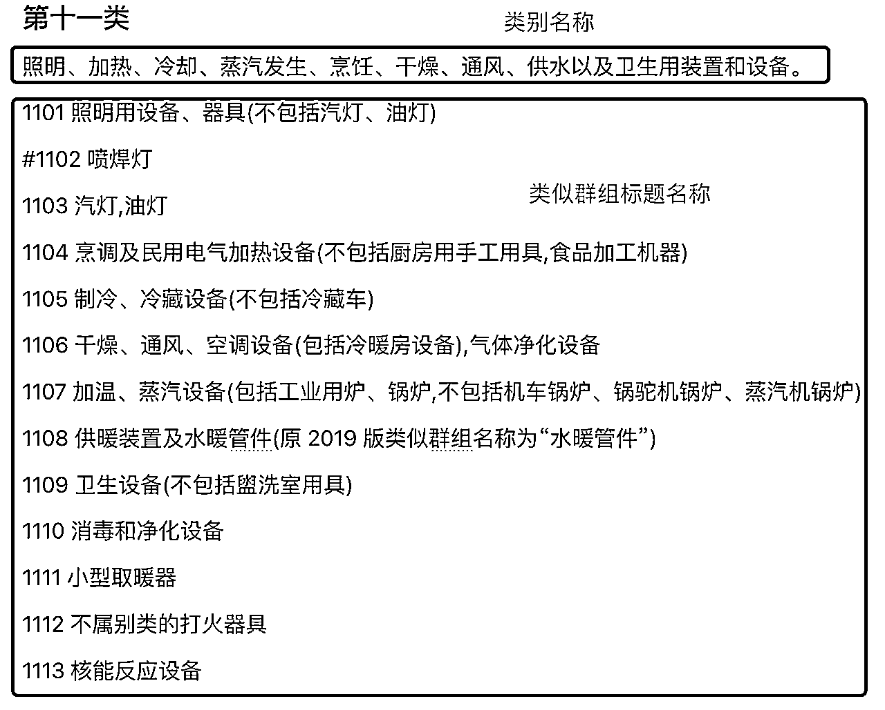
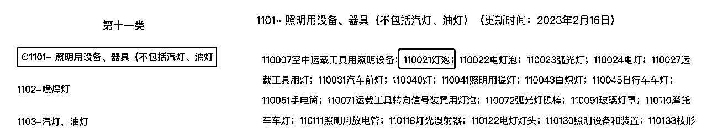

来源：https://iwvmcwbm4c2.feishu.cn/docx/OpXIdbXvZoXp1HxU0BLcH4TtnHe
1-确定商标所使用的范围（注册的商品主要是用来干什么的？）确定好类别（可以是多个类别）
2-确定商品（实际销售/服务涉及到的）
3-同类别不同群组的防御性保护策略
在选择商品或者服务项目时，不能使用类别名称或者类似群组标题名称；而应该选择类似群组下具体商品或服项目。
例如：第十一类的类别名称是：照明、加热、蒸汽发生、烹饪、冷藏、干燥、通风、供水以及卫生用装置。
1101群组的名称是：照明用设备、器具（不包括汽灯、油灯）
而应该选的商品是：群组名称下面的“灯泡”。


用于工业、科学、摄影、农业、园艺和林业的化学品；未加工人造合成树脂,未加工塑料物质；灭火和防火用合成物；淬火和焊接用制剂；鞣制动物皮毛用物质；工业用粘黏合剂(原名称：工业用粘合剂)；油灰及其他膏状填料；堆肥,肥料,化肥；工业和科学用生物制剂。
0101 工业气体,单质
0102 用于工业、科学、农业、园艺、林业的工业化工原料
0103 放射性元素及其化学品
0104 用于工业、科学的化学品、化学制剂,不属于其他类别的产品用的化学制品
0105 用于农业、园艺、林业的化学品、化学制剂
0106 化学试剂
0107 摄影用化学用品及材料
0108 未加工的人造合成树脂,未加工塑料物质(不包括未加工的天然树脂)
0109 肥料
0110 灭火、防火用合成物
0111 淬火用化学制剂
0112 焊接用化学制剂
0113 食药用化学品(不包括食品用防腐盐)
0114 鞣料及皮革用化学品
0115 工业用粘合剂和胶(不包括纸用粘合剂）
0116 纸浆
#0117 能源（本类似群第九版时移入 0407 类似群）
颜料,清漆,漆；防锈剂和木材防腐剂；着色剂,染料；印刷、标记和雕刻用油墨；未加工的天然树脂；绘画、装饰、印刷和艺术用金属箔及金属粉。
0201 染料,媒染剂(不包括食用)
0202 颜料(不包括食用、绝缘用),绘画、装饰、印刷和艺术用金属箔及金属粉
0203 食品着色剂
0204 油墨
0205 涂料,油漆及附料(不包括绝缘漆)
0206 防锈剂,木材防腐剂
0207 未加工的天然树脂
不含药物的化妆品和梳洗用制剂；不含药物的牙膏；香料,香精油；洗衣用漂白剂及其他物料；清洁、擦亮、去渍及研磨用制剂。
0301 肥皂,香皂及其他人用洗洁物品,洗衣用漂白剂及其他物料
0302 清洁、去渍用制剂
0303 抛光、擦亮制剂
0304 研磨用材料及其制剂
0305 香料,香精油
0306 化妆品(不包括动物用化妆品)
0307 牙膏,洗牙用制剂
0308 熏料
0309 动物用化妆品
0310 室内芳香剂
工业用油和油脂,蜡；润滑剂；吸收、润湿和粘结灰尘用合成物；燃料和照明材料；照明用蜡烛和灯芯。
0401 工业用油及油脂,润滑油,润滑剂(不包括燃料用油)
0402 液体、气体燃料和照明燃料
0403 固体燃料
0404 工业用蜡
0405 照明用蜡烛和灯芯
0406 吸收、润湿和粘结灰尘用合成物
0407 能源
药品,医用和兽医用制剂；医用卫生制剂；医用或兽医用营养食物和物质,婴儿食品； 人用和动物用膳食补充剂；膏药,绷敷材料；填塞牙孔用料,牙科用蜡；消毒剂；消灭有害动物制剂；杀真菌剂,除莠剂。
0501 药品,消毒剂,中药药材,药酒
0502 医用营养品,人用膳食补充剂,婴儿食品
0503 净化制剂
0504 兽药,动物用膳食补充剂
0505 杀虫剂,除莠剂,农药
0506 卫生用品,绷敷材料,医用保健袋
0507 填塞牙孔用料,牙科用蜡
0508 单一商品
普通金属及其合金,金属矿石；金属建筑材料；可移动金属建筑物；普通金属制非电气用缆线；金属小五金具；存储和运输用金属容器；保险箱。
0601 普通金属及其合金、板、各种型材(不包括焊接及铁路用金属材料)
0602 普通金属管及其配件
0603 金属建筑材料,可移动金属建筑物(不包括建筑小五金)
0604 铁路用金属材料
0605 非电气用缆索和金属线、网、带
0606 缆绳用非电气金属附件
0607 钉及标准紧固件
0608 家具及门窗的金属附件
0609 日用五金器具
0610 非电子锁
0611 保险箱柜
0612 金属器具,金属硬件(非机器零件)
0613 金属容器
0614 金属标牌
0615 动物用金属制品
0616 焊接用金属材料(不包括塑料焊丝)
0617 锚,停船用金属浮动船坞,金属下锚桩
0618 手铐,金属制身份鉴别手环
0619(测气象或风力的)金属风标
0620 金属植物保护器
0621 捕野兽陷阱
0622 普通金属艺术品,青铜(艺术品)
0623 矿石,矿砂
0624 金属棺(埋葬用),金属棺材扣件,棺材用金属器材
机器,机床,电动工具；马达和引擎(陆地车辆用的除外)；机器联结器和传动机件(陆地车辆用的除外)；除手动手工具以外的农业器具；孵化器；自动售货机。
0701 农业用机械及部件(不包括小农具)
0702 渔牧业用机械及器具
0703 伐木、锯木、木材加工及火柴生产用机械及器具
0704 造纸及加工纸制品工业用机械及器具
0705 印刷工业用机械及器具
0706 纤维加工及纺织、针织工业用机械及部件
0707 印染工业用机械
0708 制茶工业用机械
0709 食品业用机械及部件
0710 酿造、饮料工业用机械
0711 烟草工业用机械
0712 皮革工业用机械
0713 缝纫、制鞋工业用机械
0714 自行车工业用设备
0715 陶瓷、砖、瓦制造机械
0716 工业用雕刻、打标机械
0717 制电池机械
0718 日用杂品加工机械
0719 制搪瓷机械
0720 制灯泡机械
0721 包装机械(不包括成套设备专用包装机械)
0722 民用煤加工机械
0723 厨房家用器具(不包括烹调、电气加热设备及厨房手工具)
0724 洗衣机
0725 制药工业用机械及部件
0726 橡胶、塑料工业机械
0727 玻璃工业用机械
0728 化肥设备
0729 其他化学工业用机械
0730 地质勘探、采矿、选矿用机械
0731 冶炼工业用设备
0732 石油开采、精炼工业用设备
0733 建筑、铁道、土木工程用机械
0734 起重运输机械
0735 锻压设备
0736 铸造机械
0737 蒸汽动力设备
0738 内燃动力设备
0739 风力、水力动力设备
0740 制办公用针钉机械
0741 制纽扣拉链机械
0742 切削机床,切削工具和其他金属加工机械(原 2019 版类似群名称为“金属切削机床,切削工具和其他金属加工机械”)
0743 非手动的手持工具
0744 静电、电子工业用设备
0745 光学工业用设备
0746 气体分离设备
0747 喷漆机具
0748 发电机,非陆地车辆用马达和引擎,马达和引擎零部件
0749 泵,阀,气体压缩机,风机,液压元件,气动元件
0750 机器传动用联轴节,传动带及其他机器零部件
0751 焊接机械
0752 清洁、废物处理机械
0753 单一商品
0754 电镀设备
手工具和器具(手动的)；刀、叉和匙餐具；除火器外的随身武器；剃刀。
0801 手动研磨器具
0802 小农具(不包括农业、园艺用刀剪)
0803 林业、园艺用手工具
0804 畜牧业用手工具
0805 渔业用手工具
0806 理发工具,修指甲刀,文身器具
0807 非动力手工具(不包括刀、剪)
0808 非动力手工器具
0809 专业用手工具
0810 刀剪(不包括机械刀片,文具刀)
0811 除火器外的随身武器
0812 餐具刀、叉、匙
0813 手工具柄
科学、研究、导航、测量、摄影、电影、视听、光学、衡具、量具、信号、侦测、测试、检验、救生和教学用装置及仪器；处理、开关、转换、积累、调节或控制电的配送或使用的装置和仪器；录制、传送、重放或处理声音、影像或数据的装置和仪器；已录制和可下载的媒体,计算机软件,录制和存储用空白的数字或模拟介质；投币启动设备用机械装置；收银机,计算设备；计算机和计算机外围设备；潜水服,潜水面罩, 潜水用耳塞,潜水和游泳用鼻夹,潜水员手套,潜水呼吸器；灭火设备。
0901 电子计算机及其外部设备
0902 记录、记数检测器
0903 其他办公用机械(不包括打字机、誊写机、油印机)
0904 衡器
0905 量具
0906 信号器具
0907 通信导航设备
0908 音像设备
0909 摄影、电影用具及仪器
0910 测量仪器仪表,实验室用器具,电测量仪器,科学仪器
0911 光学仪器
0912 光电传输材料
0913 电器用晶体及碳素材料,电子、电气通用元件
0914 电器成套设备及控制装置
0915 非空气、非水处理用电离设备(原 2021 版类似群名称为“电解装置”)
0916 灭火器具
#0917 电弧切割、焊接设备及器具
0918 工业用 X 光机械设备
0919 安全救护器具
0920 警报装置,电铃
0921 眼镜及附件
0922 电池,充电器
0923 电影片,已曝光材料
0924 单一商品(原 2018 版类似群名称为“其他”)
外科、医疗、牙科和兽医用仪器及器械；假肢,假眼和假牙；矫形用物品；缝合材料；残疾人专用治疗装置；按摩器械；婴儿护理用器械、器具及用品；性生活用器械、器具及用品。
1001 外科、医疗和兽医用仪器、器械、设备,不包括电子、核子、电疗、医疗用 X光设备、器械及仪器
1002 牙科设备及器具
1003 医疗用电子、核子、电疗和 X 光设备
1004 医疗用辅助器具、设备和用品
1005 奶嘴,奶瓶
1006 性用品
1007 假肢,假发和假器官
1008 矫形矫正及助行用品
1009 缝合用材料
照明、加热、冷却、蒸汽发生、烹饪、干燥、通风、供水以及卫生用装置和设备。
1101 照明用设备、器具(不包括汽灯、油灯)
#1102 喷焊灯
1103 汽灯,油灯
1104 烹调及民用电气加热设备(不包括厨房用手工用具,食品加工机器)
1105 制冷、冷藏设备(不包括冷藏车)
1106 干燥、通风、空调设备(包括冷暖房设备),气体净化设备
1107 加温、蒸汽设备(包括工业用炉、锅炉,不包括机车锅炉、锅驼机锅炉、蒸汽机锅炉)
1108 供暖装置及水暖管件(原 2019 版类似群组名称为“水暖管件”)
1109 卫生设备(不包括盥洗室用具)
1110 消毒和净化设备
1111 小型取暖器
1112 不属别类的打火器具
1113 核能反应设备
运载工具；陆、空、海用运载装置。
1201 火车及其零部件
1202 汽车、电车、摩托车及其零部件(不包括轮胎)
#1203 摩托车及其零部件(不包括轮胎)
1204 自行车、三轮车及其零部件(不包括轮胎)
1205 缆车,架空运输设备
1206 轮椅,手推车,儿童推车
1207 畜力车辆,雪橇
1208 轮胎及轮胎修理工具
1209 空用运载工具(不包括飞机轮胎)
1210 水用运载工具
1211 运载工具零部件
火器；军火及弹药；炸药；焰火。
1301 火器,军火及子弹
1302 爆炸物
1303 烟火,爆竹
1304 个人防护用喷雾
贵金属及其合金；首饰,宝石和半宝石；钟表和计时仪器。
1401 贵金属及其合金
1402 贵金属盒
1403 珠宝,首饰,宝石及贵金属制纪念品
1404 钟,表,计时器及其零部件
乐器；乐谱架和乐器架；指挥棒。
1501 乐器
1502 乐器辅助用品及配件
纸和纸板；印刷品；书籍装订材料；照片；文具和办公用品(家具除外)；文具用或家庭用黏合剂；绘画材料和艺术家用材料；画笔；教育或教学用品；包装和打包用塑料纸、塑料膜和塑料袋；印刷铅字,印版。
1601 工业用纸
1602 技术用纸(不包括绝缘纸)
1603 生活用纸
1604 纸板
1605 办公、日用纸制品
1606 印刷出版物
1607 照片,图片,图画
#1608 纸牌,扑克牌
1609 纸及不属别类的塑料包装物品
1610 办公装订、切削用具
1611 办公文具(不包括笔,墨,印,胶水)
1612 墨,砚
1613 印章,印油
1614 笔
1615 办公或家庭用胶带或黏合剂
1616 办公室用绘图仪器,绘画仪器
1617 绘画用具(不包括绘图仪器,笔)
1618 打字机、誊写机、油印机及其附件(包括印刷铅字、印版)
1619 教学用具(不包括教学实验用仪器)
1620 室内模型物(不包括教学用模型标本)
#1621 单一商品
未加工和半加工的橡胶、古塔胶、树胶、石棉、云母及这些材料的代用品；生产用成型塑料和树脂制品；包装、填充和绝缘用材料；非金属软管和非金属柔性管。
1701 不属别类的橡胶,古塔胶,树胶
1702 非金属密封减震制品
1703 橡胶,树脂,纤维制品
1704 软管
1705 保温、隔热、隔音材料
1706 绝缘用材料及其制品
1707 包装、填充用材料(包括橡胶、塑料制品)
1708 单一商品
皮革和人造皮革；动物皮；行李箱和背包；雨伞和阳伞；手杖；鞭,马具和鞍具；动物用项圈、皮带和衣服。
1801 皮革和人造皮革,裘皮
1802 不属别类的皮革、人造皮革制品,箱子及旅行袋,日用革制品
#1803 裘皮
1804 雨伞及其部件
1805 手杖
1806 动物用具
#1807 肠衣
非金属的建筑材料；建筑用非金属硬管；柏油,沥青；可移动非金属建筑物；非金属纪念碑。
1901 木材(原 2020 版类似群名称为“半成品木材”)
1902 土,沙,石,石料,灰泥,炉渣等建筑用料
1903 石膏
1904 水泥
1905 水泥预制构件
1906 建筑砖瓦
1907 非金属耐火材料及制品
1908 柏油,沥青及制品
1909 非金属建筑材料及构件(不包括水泥预制构件)
1910 非金属建筑物
1911 建筑用玻璃及玻璃材料
1912 建筑用涂层
1913 建筑用黏合料
1914 石、混凝土、大理石雕塑品
1915 棺椁墓碑
家具,镜子,相框；存储或运输用非金属容器；未加工或半加工的骨、角、鲸骨或珍珠 母；贝壳；海泡石；黄琥珀。
2001 家具
2002 非金属容器及附件
2003 不属别类的工业、建筑配件
2004 镜子、画框及部件
2005 不属别类的竹、藤、棕、草制品
2006 未加工或半加工的骨、角、牙、介及不属别类的工艺品
2007 非金属牌照
2008 食品用塑料装饰品
2009 禽、畜等动物用制品
2010 非金属制身份鉴别手环
2011 非金属棺材及附件
2012 家具部件及非金属附件(原 2019 版类似群名称为“非金属家具附件”)
2013 垫,枕
2014 非金属紧固件及门窗附件
家用或厨房用器具和容器;烹饪用具和餐具(刀、叉、匙除外);梳子和海绵;刷子(画笔除外);制刷原料;清洁用具;未加工或半加工玻璃(建筑用玻璃除外);玻璃器皿、瓷器和陶器。
2101 厨房炊事用具及容器(包括不属别类的餐具)
2102 不属别类的玻璃器皿
2103 瓷器,陶器(茶具,酒具除外)
2104 玻璃、瓷、陶的工艺品
2105 茶具、酒具、咖啡具及饮水用具
2106 家庭日用及卫生器具
2107 梳子,刷子(不包括牙刷),制刷材料
2108 刷牙用具
2109 牙签
2110 化妆用具
2111 隔热用具
2112 家务用具
2113 未加工或半加工玻璃(不包括建筑用玻璃)
2114 不属别类的动植物器具
2115 家用灭虫、灭鼠用具
绳索和细绳；网；帐篷和防水遮布；纺织品或合成材料制遮篷；帆；运输和贮存散装物用麻袋；衬垫和填充材料(纸或纸板、橡胶、塑料制除外)；纺织用纤维原料及其替代品。
2201 缆,绳,线,带
2202 网,遮篷,帐篷,防水帆布,帆
2203 袋子,装卸、包装用物品
2204 衬垫,填充料,密封物品(不包括橡胶、塑料制品)
2205 纤维原料
纺织用纱和线。
2301 纺织用纱、丝
2302 线
2303 毛线
织物及其替代品;家庭日用纺织品;纺织品制或塑料制帘。
2401 纺织品,布料
2402 特殊用织物
2403 纺织品壁挂
2404 毡及毡制品
2405 毛巾,浴巾,手帕
2406 床上用品
2407 室内遮盖物
#2408 洗涤用手套
2409 特殊用布
2410 纺织品制或塑料制旗.
2411 寿衣
服装,鞋,帽
2501 衣物
2502 婴儿纺织用品
2503 特种运动服装
2504 不透水服装
2505 戏装
#2506 特殊用鞋
2507 鞋
2508 帽
2509 袜
2510 手套(不包括特种手套)
2511 领带,围巾,披巾,面纱
2512 腰带,服装带
2513 单一商品
花边,编带和刺绣品,缝纫用饰带和蝴蝶结;纽扣,领钩扣,饰针和缝针;人造花;发饰; 假发。
2601 花边,饰品及编带
2602 不属别类的服饰品,饰针
2603 纽扣,领钩扣,拉链
2604 假发,假胡须
2605 缝纫用具(线除外）
2606 假花
2607 硬托衬骨
2608 修补纺织品用热粘胶片
2609 亚麻布标记用品
#2610 茶壶保暖套
2611 单一商品
地毯,地席,亚麻油地毡及其他铺在已建成地板上的材料；非纺织品制壁挂。
2701 地毯
2702 席类
2703 垫及其他可移动铺地板用品
2704 墙纸,非纺织品墙帷及非纺织品壁挂
游戏器具和玩具;视频游戏装置;体育和运动用品;圣诞树用装饰品。
2801 娱乐器械,娱乐物品
2802 玩具
2803 棋,牌及辅助器材
2804 球类及器材
2805 健身器材
2806 射箭运动器材
2807 体操、举重、田径、冰雪及属于本类的其他运动器材
2808 游泳池及跑道
2809 运动防护器具及冰鞋
2810 圣诞树用的装饰品
2811 钓具
2812 单一商品
肉,鱼,家禽和野味;肉汁;腌渍、冷冻、干制及煮熟的水果和蔬菜;果冻,果酱,蜜饯;蛋,奶,奶酪,黄油,酸奶和其他奶制品;食用油和油脂。
2901 肉,非活的家禽,野味,肉汁
2902 非活水产品
2903 罐头食品(软包装食品不包括在内,随原料制成品归组)
2904 腌渍、干制水果及果蔬制零食小吃(原 2020 版类似群名称为“腌、干制水果及制品”)
2905 腌制、干制蔬菜
2906 蛋品
2907 奶及乳制品
2908 食用油脂
#2909 色拉
2910 食用果胶
2911 加工过的坚果
2912 菌类干制品
2913 食物蛋白,豆腐制品
2914 肠衣
咖啡、茶、可可及其代用品；米,意式面食,面条；食用淀粉和西米；面粉和谷类制品；面包、糕点和甜食；巧克力；冰淇淋,果汁刨冰和其他食用冰；糖,蜂蜜,糖浆；鲜酵母,发酵粉；食盐,调味料,香辛料,腌制香草；醋,调味酱汁和其他调味品；冰(冻结的水)
3001 咖啡,咖啡代用品,可可
3002 茶、茶饮料
3003 糖
3004 糖果,南糖,糖
3005 蜂蜜,蜂王浆等营养食品
3006 面包,糕点
3007 方便食品
3008 米,面粉(包括五谷杂粮)
3009 面条及米面制品
3010 谷物膨化食品
#3011 豆粉,食用预制面筋
3012 食用淀粉及其制品
3013 食用冰,冰制品
3014 食盐
3015 酱油,醋
3016 芥末,味精,沙司,酱等调味品
3017 酵母
3018 食用香精,香料
3019 单一商品
未加工的农业、水产养殖业、园艺、林业产品;未加工的谷物和种子;新鲜水果和蔬菜,
新鲜芳香草本植物;草木和花卉;种植用球茎、幼苗和种子;活动物;动物的饮食;麦芽。
3101 未加工的林业产品
3102 未加工的谷物及农产品(不包括蔬菜,种子)
3103 花卉,草本植物(原 2019 版类似群名称为“花卉,园艺产品,草本植物”)
3104 活动物
3105 未加工的水果及干果
3106 新鲜蔬菜
3107 种子
3108 动物饲料
3109 麦芽
3110 动物栖息用干草等制品
啤酒；无酒精饮料；矿泉水和汽水；水果饮料及果汁；糖浆及其他用于制作无酒精饮料的制剂。
3201 啤酒.
3202 不含酒精饮料
3203 糖浆及其他供饮料用的制剂
酒精饮料(啤酒除外)；制饮料用酒精制剂。
3301 含酒精的饮料(啤酒除外)
烟草和烟草代用品；香烟和雪茄；电子香烟和吸烟者用口腔雾化器；烟具；火柴。
3401 烟草及其制品
3402 烟具
3403 火柴
3404 吸烟用打火机
3405 烟纸,过滤嘴
3406 香烟用调味品
3407 电子香烟及其部件
3501 广告
3502 工商管理辅助业
3503 为他人推销(原 2021 版类似群名称为“替他人推销”)
3504 人事管理辅助业
3505 商业企业迁移
3506 办公事务
3507 财会
3508 单一服务
3509 药品、医疗用品零售或批发服务
3601 保险
3602 金融事务
3603 珍品估价
3604 不动产事务
3605 海关经纪(原 2018 版类似群名称为“经纪”)
3606 担保
3607 慈善募捐
3608 受托管理
3609 典当
建筑服务；安装和修理服务；采矿,石油和天然气钻探。
3701 建设、维修信息服务
3702 建筑工程服务
3703 开采服务
3704 建筑物装饰修理服务
3705 供暖设备的安装与修理
3706 机械、电器设备的安装与修理
3707 陆地机械车辆维修
3708 飞机维修
3709 船只建造和维修服务(原 2021 版类似群名称为“造船服务”)
3710 影视器材维修
3711 钟表修理
3712 保险装置的维修
3713 特殊处理服务
3714 轮胎维修服务
3715 家具的修复、保养
3716 衣服、皮革的修补、保护、洗涤服务
3717 灭虫,消毒服务
3718 单一服务
电信服务。
3801 进行播放无线电或电视节目的服务
3802 通讯服务
运输;商品包装和贮藏;旅行安排。
3901 运输及运输前的包装服务
3902 水上运输及相关服务
3903 陆地运输
3904 空中运输
3905 其他运输及相关服务
3906 货物的贮藏
3907 潜水工具出租
3908 供水电气服务
3909 水闸管理服务
3910 投递服务
3911 旅行安排
3912 单一服务
材料处理；废物和垃圾的回收利用；空气净化和水处理；印刷服务；食物和饮料的防腐处理。
4001 综合加工及提供信息服务
4002 金属材料处理或加工服务
4003 纺织品化学处理或加工服务
4004 木材加工服务
4005 纸张加工服务
4006 玻璃加工服务
4007 陶器加工服务
4008 食物、饮料加工服务
4009 剥制加工服务
4010 皮革、服装加工服务
4011 影像加工处理服务
4012 废物处理服务(原 2021 版类似群名称为“污物处理服务”)
4013 空气调节服务
4014 水处理服务
4015 单一服务
4016 船只定制生产服务
4017 航空器定制生产服务
教育；提供培训；娱乐；文体活动。
4101 教育
4102 组织和安排教育、文化、娱乐等活动
4103 图书馆服务
4104 出版服务
4105 文娱、体育活动的服务
4106 驯兽
4107 单一服务
科学技术服务和与之相关的研究与设计服务；工业分析、工业研究和工业品外观设计服务；质量控制和质量认证服务；计算机硬件与软件的设计与开发。
4209 提供科学技术研究服务(原 2018 版类似群为：提供研究和开发服务)
4210 提供地质调查、研究、开发服务
4211 提供化学研究服务
4212 提供生物学、医学研究服务(原 2018 版类似群为：提供生物学研究服务)
4213 提供气象情报服务
4214 提供测试服务
4216 外观设计服务
4217 建筑物的设计、咨询服务
4218 服装设计服务
4220 计算机编程及相关服务
4227 单一服务
提供食物和饮料服务；临时住宿。
4301 提供餐饮,住宿服务
4302 提供房屋设施的服务
4303 养老院
4304 托儿服务
4305 为动物提供食宿
4306 单一服务
医疗服务；兽医服务；人或动物的卫生和美容服务；农业、水产养殖、园艺和林业服 务
4401 医疗服务
4402 卫生、美容服务
4403 为动物提供服务
4404 农业、园艺服务
4405 单一服务
法律服务；为有形财产和个人提供实体保护的安全服务；由他人提供的为满足个人需要的私人和社会服务
4501 安全服务
4502 提供人员服务
4503 提供服饰服务
4504 殡仪服务
4505 单一服务
4506 法律服务